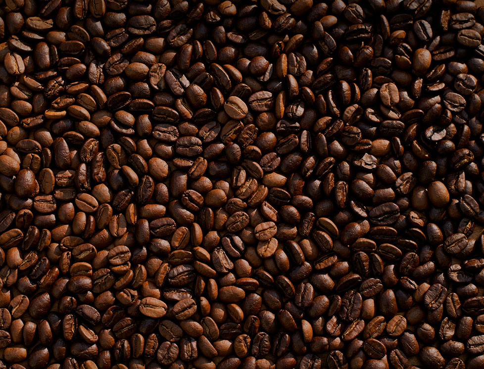

01
story
「逃げ場」ではなく、
「還る場所」を作りたかった。
下北沢の路地裏、古い一軒家を改装して開いたのは2019年の秋。オーナーの田中美緒が長年温め続けた夢の実現だった。誰かの大切な時間の一部になれるような、そんな場所を作りたい――その一心だけで、工事から内装まで自分たちの手で仕上げた。
「カフェ」という言葉には、待ち合わせ、作業、読書、ひとり時間――あらゆる理由で人が訪れるイメージがある。でも私たちが目指したのは、理由のない滞在を許してくれる空間。何もしなくていい。ただそこにいるだけでいい、そんな場所。

食事メニューはシェフの菅野朋美が担当。地元農家からの野菜を使ったデイリープレートと、素材を引き算したシンプルなスイーツが中心。コーヒーとの相性を最優先に設計されている。
焙煎は京都の老舗「木屋町珈琲」に依頼し、豆の選定から抽出レシピまで共同で開発。季節ごとに変わるシングルオリジン2種と、年間を通して提供するブレンド1種を核に、スペシャルティコーヒーの世界を間口広く伝えることを心がけている。